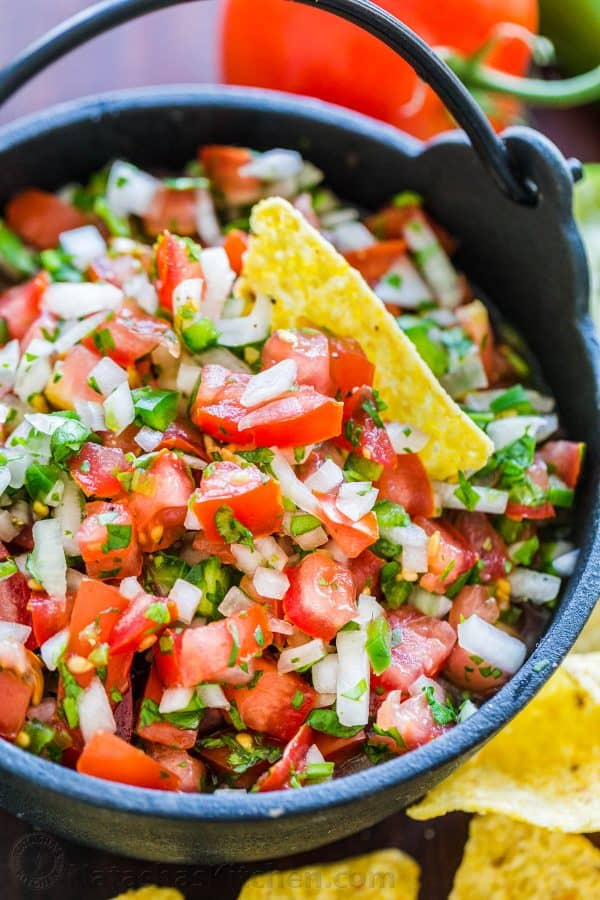

What is it?
Pico de Gallo is a dish that contains tomatoes, cilantro, onions, and lime juice. This
dish is commonly confused with salsa. This dish is used as a complement to various other dishes
like as a condiment in burritos, rice dishes, and tacos.
Ingredients and equipment
- Tomatos, diced, six.
- Cilantro, diced, two bundles.
- Onions, diced, three.
- Lime juice, squeezed from eight limes.
Recipe
- To a mixing bowl or large pan, add in all ingredients.
- Mix thoroughly and place in fridge for two to three hours.
- After taking out of fridge, can be used in dishes as condiments or complements.
Click here to return to home page.